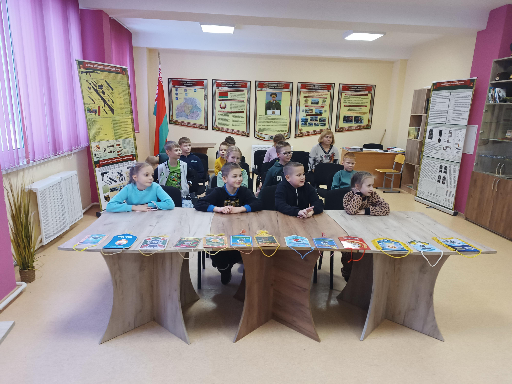
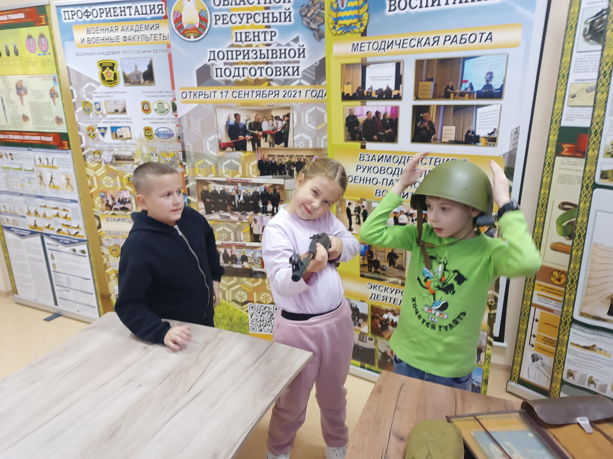
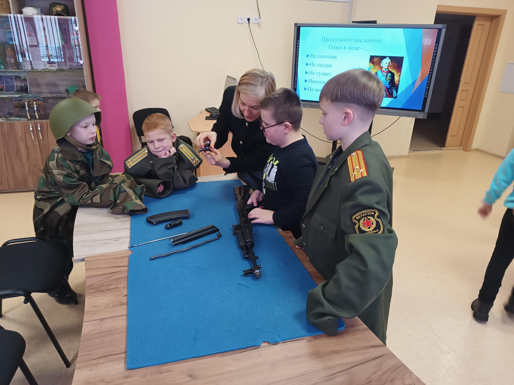
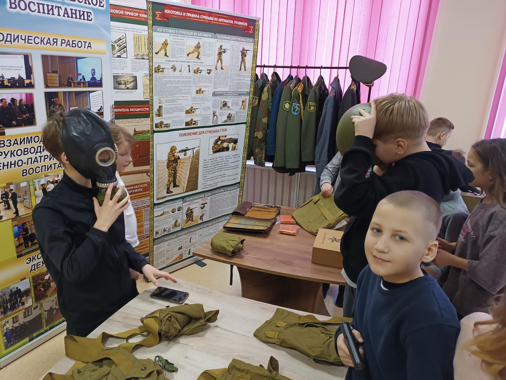
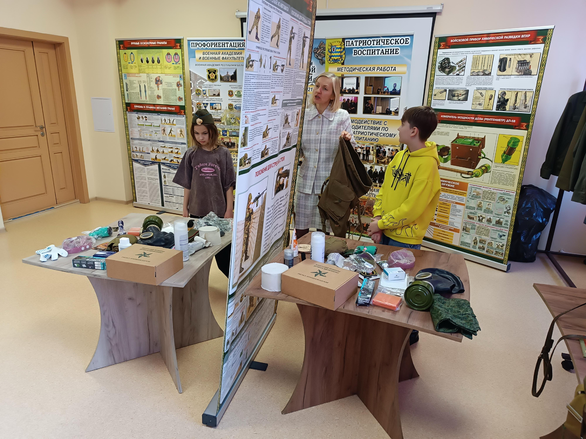

ЭКСКУРСИЯ В ЦЕНТР ДОПРИЗЫВНОЙ ПОДГОТОВКИ
29 и 30 декабря ребята воспитательно-оздоровительного лагеря «Веселые ребята» посетили ресурсный центр допризывной подготовки, где стали участниками военно-патриотического квиза.


В рамках мероприятия ребята узнали в доступной форме о предназначении, целях и задачах центра, продемонстрировали свои знания в викторине, посвященной государственным символам и административно-территориальному делению Беларуси, Вооруженным Силам Республики Беларусь, приняли участие в конкурсе по экипировке вещевого мешка к учениям.


Заведующий центром Татьяна Журавель рассказала ребятам об экспонатах, представленных в центре, видах обмундирования военнослужащих и его предназначении, элементах формы одежды. В завершении ребятам была представлена возможность поддержать в руках и разобрать стрелковое оружие, примерить на себе противогазы и военную форму.
